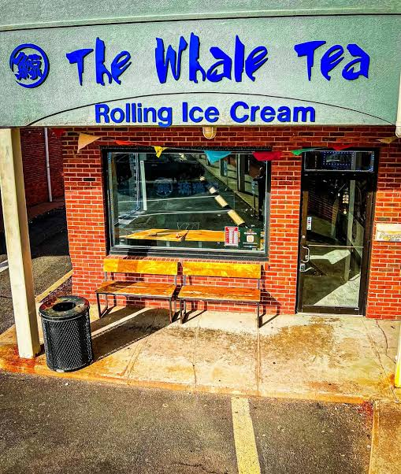

YOUR POST ROAD PIT STOP. ↗
A LITTLE CORNER OF FAIRFIELD
Big tea energy.
Neighborhood soul.
The Whale Tea’s Fairfield location is at 1700 Post Road. Its menu ranges from brown sugar fresh milk and classic milk teas to fruit teas and the Whale Crystal series.
Explore drinks by category here, then visit the business’s own menu or official ordering page for current options. Prefer to stop by? Find the address, hours, and directions below.
Find our little corner ↗